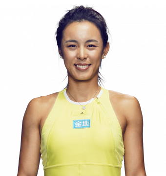
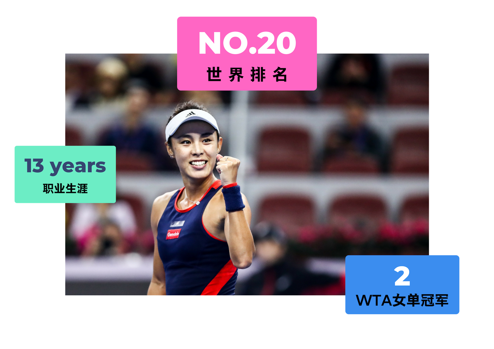
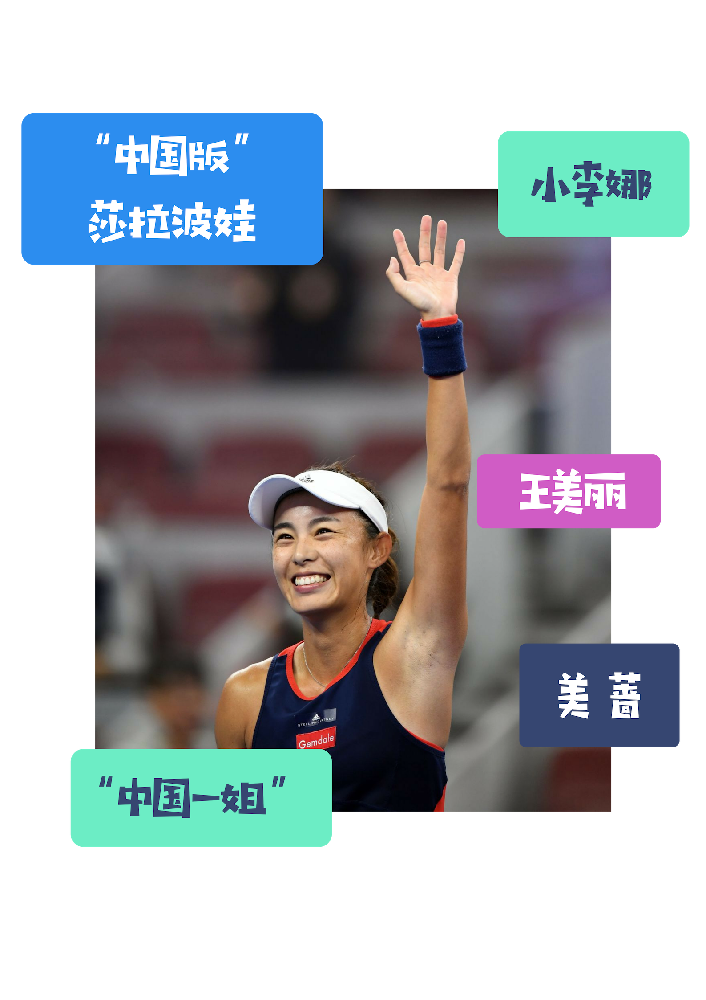

王蔷，Wang Qiang
| 年龄 | 26 |
| 祖籍 | 天津，中国 |
| 身高 | 1.72m |
| 体重 | 60kg |
| 专业特点 | 右手持拍，双手反拍 |
| WTA女单冠军 | 2次 (2018江西、广州) |
| 2018 胜 | 2018 负 |
|---|---|
| 41 | 23 |
| 职业生涯 胜 | 职业生涯 负 |
| 336 | 229 |
| 2018 奖金 | 职业生涯 奖金 |
| $1,596,204 | $3,033,692 |

有颜值，更有实力
01
王蔷是网球界公认的美女，但是她并不是依靠颜值登上“中国一姐”的宝座。从14岁步入职业网坛，她追赶世界一流的脚步就从未停歇。虽然那一次次的自我突破淹没在了李娜的光环之下而无人喝彩，但从头来看却令人肃然起敬，偏偏依靠颜值就能偏安一隅的王蔷，骨子里不服输的那股劲支撑着她不断的进步和自我突破。

个体户的成长之路
02
从9岁开始打球，王蔷就一直都没有注册单位，有人说她是“个体户”，或者说她是个“体制外”的球员。
-
9岁，开始接触网球
-
16岁，在父亲的支持下毅然退学，走上职业网球之路
-
2013年WTA巡回赛马来西亚站击败沃兹尼亚奇，一战成名
-
2014年仁川亚运会网球女单冠军
-
2017年第十三届全运会网球女单冠军
-
2018，进步，不停步……


突 破 之 年
2018
WTA珠海超级精英赛的结束是王蔷2018年收官之战，尽管未能以一个冠军收尾，但这已是王蔷职业生涯级别最高的单打决赛。半年前，王蔷的排名已跌至第91位。在一个近乎完美的下半赛季过后，她交出了4个巡回赛单打决赛、2个单打冠军、年终排名第20位的成绩单。